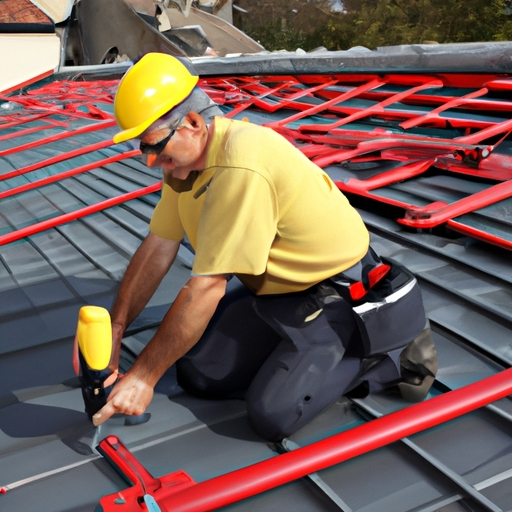
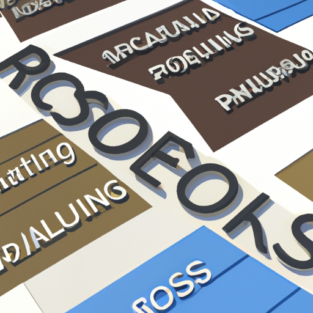

News
roofing services Paramus, New Jersey
roofing services Paramus, New Jersey
About Us
News
Common Roofing Materials and Their Advantages
When deciding on a roofing material, there are many factors to consider!. The type of roof needed for a particular area depends on the weather conditions, budget and desired aesthetic.
Posted by
on 2023-06-30

How to Find the Right Roofing Services for Your Home
Finding the right roofing services for your home can be a daunting task.. You want to make sure you get quality work that will last, so it's important to do your research and ensure satisfaction before making any final payment. (Negation) It isn't just about finding the lowest price; it's important to consider factors such as experience, customer reviews, and referrals.
First, look for an experienced contractor who has been in business for several years and can provide references.
Posted by
on 2023-06-30
How to Get Quality Roofing Work Done at an Affordable Price
Finding quality roofing work done at an affordable price can be a challenge, but it doesn't have to be!. Before you hire any contractor, make sure they carry necessary insurance coverage (it's not optional).
Posted by
on 2023-06-30
The Benefits of Hiring Professional Roofing Services
Hiring professional roofing services is a wise decision for any homeowner!. It can help protect your home from weather damages, save time and money in the long run (especially if you don't have the necessary knowledge and tools for DIY repairs).
Posted by
on 2023-06-30

What is the Key to Installing Quality Roofing Services?
Installing quality roofing services is key to ensuring the longevity of your home's roof.. It can often be a difficult and time consuming process, but with the right guidance and an experienced team, you can rest assured that your roof will remain in top condition for years to come! (First of all,) there are several steps involved in making sure that your new roof is installed correctly.
Posted by
on 2023-06-30
What is the Secret to Having a Durable and Long-Lasting Roof?
Having a durable and long-lasting roof is essential for any homeowner.. It provides protection from the elements, keeps out animals, and maintains the value of your home.
Posted by
on 2023-06-30
Old Posts
New Posts